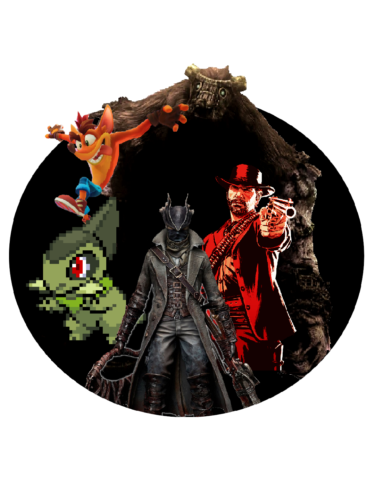

INFORMAÇÃO

OLÁ!
Meu nome é Fernanda Luiza Danzer Piekas e tenho 20 anos,
moro na região metropolitana de Curitiba.
Atualmente cursando Análise e Desenvolvimento de Sistemas na Universidade Positivo.
FORMAÇÃO
Me formei no ensino fundamental e médio no Colégio da Polícia Militar do Paraná,
encerrei o terceiro ano em 2020.
No primeiro semestre de 2023 entrei para a Universidade Positivo, sendo previsto a formatura
no segundo semestre de 2024.
Estudei inglês no curso de inglês e espanhol InFlux.
EXPERIÊNCIA
Não possuo experiência de trabalho oficialmente,
porém já participei de aplicações de concursos
e banca de professores.
HABILIDADES
SOFT SKILSS
- Paciente
- Aprende Rápido
- Boa Adaptabilidade
- Trabalho em equipe
- Proatividade
HARD SKILSS
- Básico C
- Básico HTML/CSS/JS
- Básico SQL
- Photoshop
- Pacote Office
INTERESSES
Desde criança jogos sempre foram minha paixão, foi por causa deles que me interessei por programação.
Também gosto de ler mangás, assistir animas, desenhar, passar tempo com amigos e família.
LEITURAS
Algumas leituras que gosto. Os livros "O Chamado do Monstro", "O Pequeno Príncipe" e "One Piece"
.jpg)
CONTATO
Linkedin: Acesse o Linkedin
E-mail: fepiekas@gmail.com